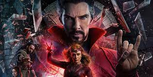

Doutor Estranho no Multiverso da Loucura
SINOPSE:
Em Doutor Estranho no Multiverso da Loucura, após derrotar Dormammu e enfrentar Thanos nos eventos de
Vingadores:
Ultimato, o Mago Supremo, Stephen Strange (Benedict Cumberbatch), e seu parceiro Wong
(Benedict Wong), continuam suas pesquisas sobre a Joia do Tempo.
Mas um velho amigo que virou
inimigo
coloca um ponto final nos seus planos e faz com que Strange desencadeie um mal indescritível, o
obrigando a enfrentar uma nova e poderosa ameaça.
O longa se conecta com a série do Disney+
WandaVision
e tem relação também com Loki.
O longa pertence a fase 4 do MCU onde a realidade do universo pode
entrar
em colapso por causa do mesmo feitiço que trouxe os vilões
do Teioso para o mundo dos Vingadores e
o
Mago Supremo precisará contar com a ajuda de Wanda (Elizabeth Olsen), que vive isolada desde os eventos
de WandaVision.